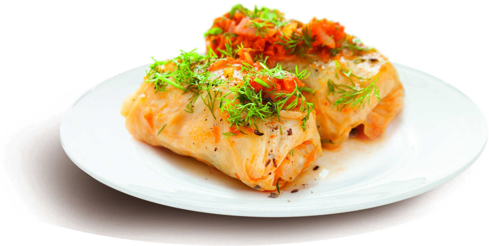

❤️

Голубці з м'ясом
Соковиті голубці з м'ясом та рисом у томатному соусі
⭐ 4.8 (92 відгуки)
👁️ 734 перегляди
Традиційна українська різдвяна страва з пшениці, маку, меду та горіхів
Соковиті голубці з м'ясом та рисом у томатному соусі
Класичний святковий салат з додаванням домашнього майонезу

Тонкі млинці з різними начинками: сир, м'ясо, гриби
Соковита котлета з вершковим маслом та зеленню всередині

Солодкі вареники з соковитими вишнями та ванільним соусом
Традиційна гуцульська страва з кукурудзяної крупи зі шкварками та бринзою
Ніжні сирники з родзинками, подаються зі сметаною та медом
Котлети з гречки та м'яса під ароматним грибним соусом
Традиційний різдвяний напій із сушених фруктів та меду

Розсипчаста гречана каша з смаженими грибами та цибулею

Традиційний салат з варених овочів з додаванням квашеної капусти

Традиційна святкова паска з родзинками та цукатами

Наваристий український суп з квашеної капусти з копченостями
Ароматна юшка з річкової риби з овочами та пшоном
Ситний суп з перловкою, солоними огірками та нирками
Корисний напій з яблук, груш, слив та інших сухофруктів
Старовинний гарячий напій з медом та прянощами
Традиційний густий напій з лісових ягід
Ніжна закуска з оселедця з яблуками та цибулею
Ароматна паста з нуту з кунжутною пастою та спеціями

Ніжний паштет з курячої печінки з вершковим маслом та цибулею